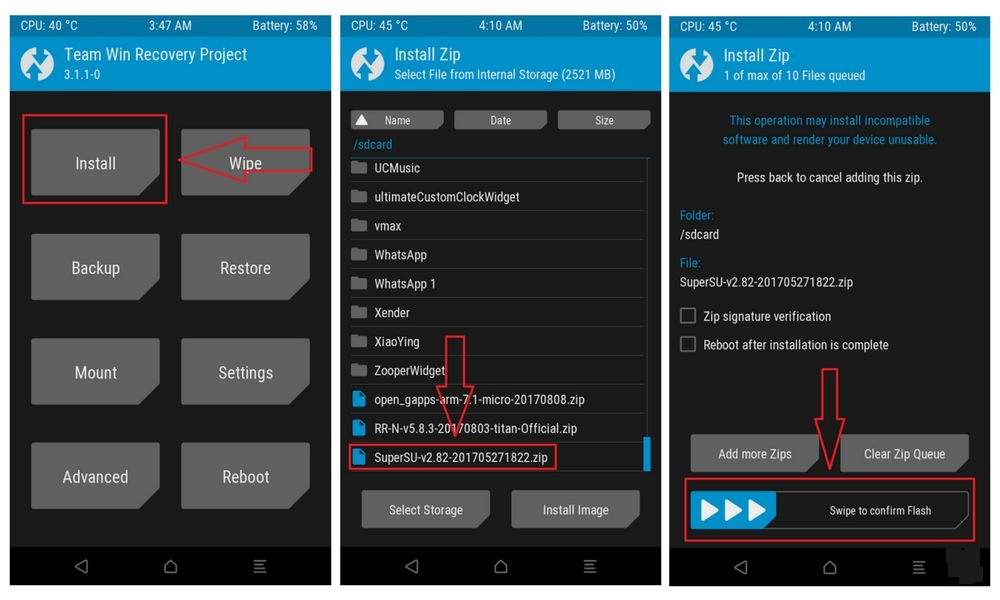
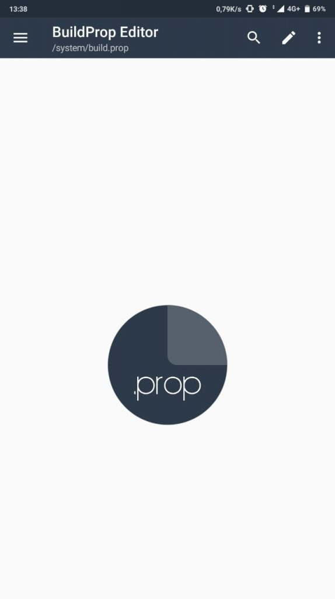

Google Fotocamera è l’applicazione fotocamera disponibile sugli smartphone Google Pixel e Nexus, ma grazie a installazioni manuali e porting risulta
di fatto installabile anche su numerosi altri smartphone Android. In questa guida andiamo a scoprire come averla e utilizzarla sul vostro dispositivo.
Prima di partire dobbiamo però specificare un paio di particolari: trattandosi nella maggior parte dei casi di porting o versioni modificate, ossia
app adattate, non tutte le funzionalità (come l’HDR+) risultano compatibili con qualunque smartphone (o tablet) Android; data la grande varietà di
modelli sul mercato, può anche capitare di non riuscire a farla funzionare, che l’app risulti instabile o che dobbiate maneggiare un po’ tra le varie
impostazioni. Procediamo, dunque, e andiamo a scoprire come
installare la Google Fotocamera negli smartphone Xiaomi, Samsung, Huawei, Sony, Honor,
OnePlus, LG, Nokia, HTC, Motorola e di altri brand.
Come installare Google Fotocamera ufficiale
La Google Fotocamera è preinstallata sui
Google Pixel 2 e 3 e
Pixel 2 XL e 3 XL e risulta compatibile, seppure con qualche funzionalità in meno, anche
con i Pixel di prima generazione e i Nexus dotati di Android 7.1.1 Nougat e successivi (almeno per il momento).
Se siete possessori di tali modelli potete trovare l’applicazione sul Google Play Store (badge qui sotto) o in alternativa, nel caso abbiate fretta
di aggiornamenti, potete scaricare manualmente l’APK (sempre della versione ufficiale)
da APKMirror (
link).
Come installare Google Fotocamera su altri dispositivi senza root
Per poter utilizzare la Google Fotocamera sul vostro smartphone senza permessi di root dovete verificare qualche particolare non di poco conto:
il dispositivo deve montare un chipset Qualcomm Snapdragon o al massimo Exynos (restano esclusi dunque i SoC Kirin e MediaTek);
deve disporre almeno di Android 7.1.1 Nougat a 64-bit (meglio ancora se Android 8.0 Oreo e successivi);
implementazione delle Camera API2 (introdotte con Android 5.0 Lollipop, ma non supportate da tutti gli smartphone) –> qui per verificare
Se disponete di tutti questi requisiti dovrete andare a scaricare l’APK della versione modificata (o porting) che più vi aggrada: come abbiamo
visto in un precedente articolo ne esistono di diverse, create da una lunga lista di sviluppatori. Alcune di queste sono più complete, ma risultano
incompatibili con alcuni modelli specifici, altre ancora possono risultare più o meno instabili a seconda della versione rilasciata.
Recatevi dunque a questo indirizzo e fate la vostra scelta, scaricando l’APK della versione che fa per voi: al riguardo possiamo consigliarvi di
scegliere la versione “Arnova” (link) per avere qualcosa di completo e di optare invece per la “BSG” (link) se notate qualche problema di compatibilità
o possedete uno smartphone non proprio di ultima generazione (qui potete trovare qualche indicazione aggiuntiva).
Parlando di modelli più specifici, vi segnaliamo le versioni sviluppate da “miniuser123” (link) e “IDan” (link) se avete Samsung Galaxy S7, S7 edge,
S8 e S8 Plus (SoC Exynos), e la “cstark27” (link) se siete possessori di LG G6, che offre una seconda variante apposta per la fotocamera grandangolare.
Tenete conto che, vista l’enorme quantità di versioni, beta e funzionalità, potreste riscontrare problemi di instabilità sul vostro dispositivo.
Come installare Google Fotocamera su altri dispositivi con root
Nel caso il vostro smartphone non supporti a pieno i requisiti di cui abbiamo parlato sopra (in particolare il 2 e il 3), potete provare a installare
una versione modificata della Google Fotocamera con i permessi di root e il flash da recovery modificata (come la TWRP). Per fare questo avete prima
bisogno di sbloccare il bootloader del vostro smartphone (potete fare un giro sul nostro forum per avere istruzioni più precise al riguardo), andando
in alcuni casi a invalidare (temporaneamente o permanentemente) la garanzia ufficiale offerta dal produttore.
Il procedimento che segue utilizza SuperSU, ma siete liberi di utilizzare altri metodi per i permessi di root. Dopo aver installato una recovery
modificata (qui viene utilizzata la TWRP):
- scaricate l’ultimo zip di SuperSU a questo indirizzo;
- riavviate il dispositivo in modalità recovery (solitamente tasto power + volume giù, ma non sempre);
- premete su “installa” come nello screen qui in basso e selezionate lo zip di SuperSU;
- effettuate lo swipe verso destra richiesto per confermare il flash dello zip;
- ora premete su “riavvia sistema“;

- scaricate l’app BuildProp Editor (link al Play Store), o altre applicazioni simili;
- avviate l’app e concedetele i permessi di root;
- selezionate la voce in alto a destra (modifica), scorrete fino in fondo e scrivete “persist.camera.HAL3.enabled=1″;
- premete sul simbolo del salvataggio e in alto e selezionate “save & exit“;
- riavviate il telefono.

Ora dovreste essere in grado di scaricare l’APK modificato della Google Fotocamera scegliendo tra quelle di cui abbiamo già parlato più in alto (link).
Nel caso doveste avere problemi con le immagini capovolte della fotocamera frontale potete rimediare con l’app GCam Tool.